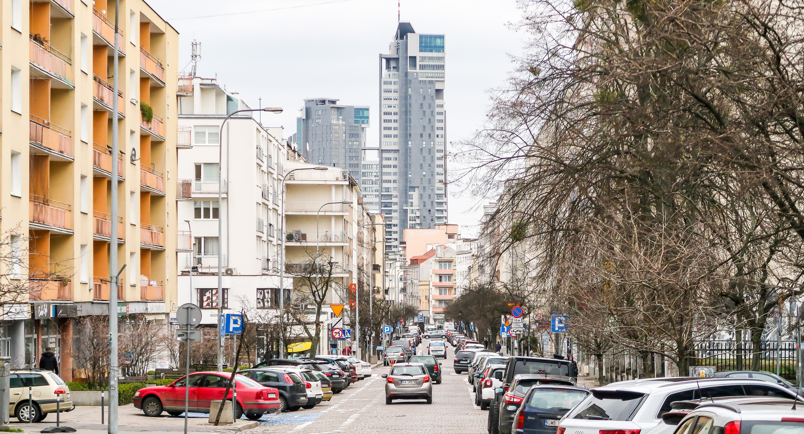

Ulica Świętojańska
Ulica reprezentacyjna Gdyni. Stoi przy niej wiele charakterystycznych gdyńskich budynków. Kiedyś była salonem handlowym Gdyni. Teraz znajdują się przy niej głównie kawiarnie, restauracje oraz butiki. Mieści się tam kościół Najświętszej Marii Panny Królowej Polski. W trakcie wojny zmieniono jej nazwę na Adolf Hitler Straße.

Ulica Starowiejska
Była to główna ulica XIII wiecznej wsi. Kiedy Gdynia otrzymała prawa miejskie, zaczęto ją rozbudowywać. Powstawały liczne domy, kamienice oraz zakłady rzemieślnicze i usługowe. Stoi przy niej hotel Centralny z 1928 roku. Jak na tamte czasy był bardzo elegancki i nowocześnie wyposażony. Mieści się tam również domek Abrahama, czyli mały ceglany domek, w którym mieszkał Antoni Abraham – kaszubski działacz.
